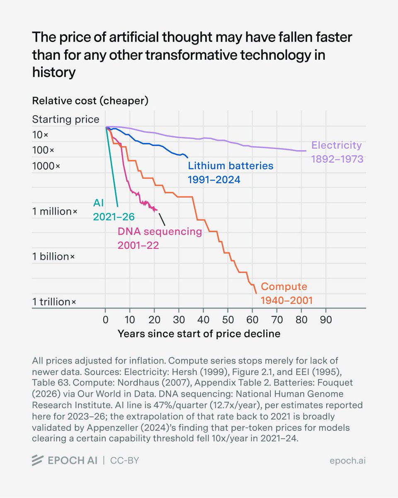
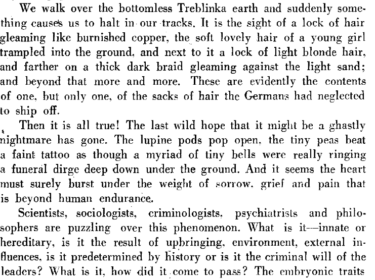

WEEKLY REMINDERS/ANNOUNCEMENTS – EWOT, Week 5
Readings and Topics this Week: We will be spending a couple of weeks or more on our Economic Evolution – I try to break it up into two pieces, first the historical record and second a consideration of the ideas that have contributed to it. You can read through BOTH Sections B and C of the reading list at your leisure.
You should NOT be memorizing the data we put up, that is not the purpose of our exploration.
Recitation: We plan to alter the style and delivery of recitation for the remainder of the term. We will continue to have access to the space and time that you signed up for, and we will leave it to each recitation TA about what content is to be delivered. The TAs may discuss class lectures (NOT A REVIEW, rather a conversation) with you, discuss findings from previous assignments with you, choose to work on traditional supply-demand analytic problems with you, or select to deliver the materials that I had originally put together for you.
Look for a note from your particular TA for the plan.
There is NO formal recitation during exam week anyway, as that time is available for discussion with your TAs and clarification and questions you may have. The new changes will be effective following the exam.
Weekly AssignmentS: For the week 5 research, PLAY THE ARCADE games! Many of them are excellent given the constraints put on you. For the Rumination, an exploration of how “big” the “world” really is.
Course Productivity Modules and Interfaces
All of your course questions answered, without having to read:
https://chatgpt.com/g/g-6a763182a9d08191b73bba0904ed9144-econ-108-syllabus-what-do-you-need-to-know
Everything you could want to know about the course topics and readings … without having to read them: the UNReading List: https://chatgpt.com/g/g-6a6b783f83a881919379581ca86905d8-the-ewot-unreading-list
Office Hours Site, previous announcements resources: https://rochesterrizzo.github.io/Rizzo-Hours/index.html or tiny.cc/RizzoHours
The Economic Demonology Project: https://rochesterrizzo.github.io/economic-demonology/
Exam: Please see the Blackboard Website and the Course Syllabus for additional information
The exam will be given in HOYT Auditorium from 2:00pm to 5:00pm on Friday the 2nd.
If you have special accommodations from ODR, WE are making the exam accommdations with you. Contact Katherine and Alexa to work out the details.
If you have a class conflict, and have completed the Google Doc that is on Blackboard, the make-up exam will be on Friday morning, October 2nd, from 7:30am to 10:30am in Harkness 115. Students who have not filled out the Google Doc will not be admitted to the room.
We DO HAVE CLASSES on the day of the exam.
The exam is entirely closed book, phone, materials, everything.
NOTE: Bring only a PEN (and a backup PEN) and your Student ID to the exam. If you bring bags, books, phones, anything other than your brain and a pen, you will be asked to take it home or leave it at the front of the room.
Make sure you have your Student ID on you, you will not be permitted to turn the exam in without it.
Make sure you know the name of your recitation TA, as you need to include this information on the exam.
The exam materials will cover everything I do through the final seconds of class this upcoming Wednesday, September 30th. All exam policies can be found on Blackboard under the exam section. It is your responsibility to have read and understood them. Be well rested. Yes, “it is on the test,” and be prepared to explain your thinking in clear, concise writing. We are interested in actual logical reasoning and good questions and arguments.
I will not be posting “practice” questions, as the world does not deliver you “practice” for the unexpected events and changes that come at you every day. I was not given “practice” for example, in how I would prepare for my friends to die in the World Trade Center attacks. And I have no idea what economic news will befall us tomorrow, or what policy will come forth. The “practice” comes from commanding the notes, and reflecting on the way the assignments have been asking questions and encouraging to examine counterfactuals and use the basic tools we have learned so far. The “test” isn’t a way to see if you can repeat back to us what we sent to you. No. The “test” is an OPPORTUNITY both to learn something from the examples we use on the exam, and a checkpoint for you to see if you are able to apply what you are learning.
TA Office Hours and Resources
Look for an announcement from our Head TA Katherine Watai.
My Availability
I will not be available electronically until Monday morning.
Call Alexa or Katherine if there is a serious issue, and they will route
communication to me. Feel free during the week to call or text.
Check out Rochester events, office hour times and locations, department information, and up to date news and job opportunities (as they come to me) visit us at tiny.cc/RizzoHours. I update my calendar weekly on that page, and include other sometimes useful information on it for you.
Tuesday hours will be held “at” the special event.
This Week at Rochester
A few things worth knowing about: Hugo McCloud at MAG Saturday; a huge home sports Saturday; Sunday’s wonderfully odd Synthposium with Moog and John Chowning; Monday’s Language City; Tuesday’s U.S.–Canada Trade War; and Wednesday’s TEDxURochester: reHuman.
Check out our full schedule here: https://rochesterrizzo.github.io/Rizzo-Hours/this-week-at-rochester/
Upcoming Special Events
Department of Economics Special Event
Title: Trade War: The View from Across Lake America!
Who: Joe Steinberg of the University of Toronto
Date: Tuesday, September 29th
Time: 6pm to 7pm
Location: Morey 321
More Info: It will be followed by a reception in Morey's Rettner Gallery with Dinosaur BBQ from 7-8:30.
RSVP for Food! Please register for the reception by Friday, September 25th using this link, so we can have a reasonable count for our reception order.
Link: https://form.jotform.com/262586026121048
The Politics and Markets Project, Moderated Panel Discussion Hosted by Professor David Primo
Title: AI and privacy (both thinking about government regulation and things like surveillance pricing, or, getting good deals!)
Date: Wednesday, November 4th
Time: 7:30pm to 8:30pm
Location: Wegmans Hall, 1400.
More Info on the PMP: Follow on Instagram
Department of Economics Special Guest Lecture

Title: Human Capital for Humans, with moderation by U of R Economics Undergraduate Isaac Miller
Who: Pablo Pena of the University of Chicago
Date: Thursday, October 8th
Time: 3:30pm
Location: Morey 321
More Info: Why do people marry, have kids, invest in health, or choose a career? Economics has an answer, and it's not "supply and demand," it's human capital theory, the framework Nobel laureate Gary Becker built and spent his career applying to every domain of human life. Pablo Peña studied under Becker at Chicago, taught his famous course after him, and has now written the accessible version of that legendary class: Human Capital for Humans.
Join us for a talk and conversation with Professor Peña about the book — how economists think about parenting, aging, marriage, and the everyday decisions that shape who we become. Expect a short talk, a moderated discussion, and open Q&A. Copies of the book will be available for purchase (and signing) at the event.
About Professor Pena: Pablo Peña first encountered human capital theory twenty years ago as an undergraduate captivated by a course taught by Nobel laureate Gary Becker at the University of Chicago — an experience he's described as immediately clarifying. That encounter led him to TA the course, and eventually to teach it himself. Peña is now an Associate Instructional Professor in Economics and the College at the University of Chicago, specializing in applied price theory, human capital theory, and empirical economics, and his research uses experimental and quasi-experimental methods and large datasets to test economic theories with actionable applications for business, nonprofits, and government. Outside academia, he co-founded Microanalitica, previously served as Director of Private Sector Partnerships at the Development Innovation Lab, and headed Economic Studies at Mexico's National Banking and Securities Commission. He earned his Ph.D. in Economics from the University of Chicago.
His book, Human Capital for Humans: An Accessible Introduction to the Economic Science of People (University of Chicago Press, 2025), has been nominated as a finalist for the Manhattan Institute's 2026 Hayek Book Prize, and has drawn praise from economists including Steven Levitt, Tyler Cowen, and Nobel laureate Michael Kremer.
Department of Economics PIZZA and PAYOFFS Special Event
Title: Pizza and Payoffs: Everything you wanted to know about the Econ major — courses, careers, and what you can actually do with an economics degree.
Who: Professor Lisa Kahn and special guest Chris Nosko
Date: mid-November
Time: TBD
Location: TBD
More Info: Chris Nosko is the head economist for Amazon!
Supply and Demand Mechanics Lab
Look for an announcement from our staff.
Some Items that Caught Our Attention
Wait, you guys are getting paid? “Prominent political influencers being paid by undisclosed entities to push social media talking points is sadly par for the course these days, but this week, the New York Times reported on a new trend shaking up the 2026 midterms: political groups are now recruiting everyday Americans to make these “opinions” (paid campaign messaging) seem authentic. The Times highlights one progressive group that paid average Joe’s up to $30 per post to talk about affordability in Texas, including a TikTok user named Drew, who as it turns out… doesn’t even live in Texas! For consultants, this new strategy presents a cheaper way to flood algorithms with messaging, but for the rest of us, it comes at a cost — any seemingly authentic opinion we encounter online now could simply be a de facto paid advertisement. Anyways, while I have you, I’d like to take a moment to talk about Abdul El-Sayed and his plan to lower costs for working families”
Wait, Maybe Make the Product Better: Colleges now slashing tuition to attract students
PS 307 Spends $52,000 Per Student, that is 60% more than RIT spends on its students. Let’s just say, the problem ain’t money.
You Guys Hate “Capitalism” Whatever That Means: “Baby Boomers are already an outlier in public support for capitalism. A majority of them (57 percent) approve, compared with younger generations, whose support ranges from 38 percent to 44 percent. But the generational gap explodes in private. Generation Z, millennials, and Generation X all express much lower support for capitalism in private, with a low of 18 percent among millennials. Meanwhile, support for capitalism actually ekes up to 59 percent in private among Boomers.” Are young people objectively worse off? Or have they just been brainwashed by progressive educators?
In Plain English, it means that the returns to big cognitive advantages are increasing. I.E. Smart people are more highly valued today than in the past – driving WITHIN occupation inequality. Why hire a second best lawyer when it is now easier than ever to find the first?
Dog Bites Man, Teacher Development Edition: “exposing” young people to the teaching profession and special teacher training in high school does NOT make them more likely to become teachers? Gee, I wonder if being trapped in a virtually abusive place for a dozen years is that easy to overcome.
Killing Grandparents Before They Die: We show how fertility delays compound across generations to raise age at first grandmotherhood. Under the 1960 first-birth schedule median grandmotherhood came at 44. Under the 2024 schedule it is 57, cutting the healthy years with grandchildren from 28 to 15. Longer life does not make up the loss of years when the grandmother is healthy enough to supply money and care. Delay is most pronounced among the college-educated, with reproductive-control access accounting for over half the fall in grandmotherhood by age 55 among White college graduates. When a daughter times her first birth to maximize her own payoff, the loss her choice imposes on her mother is external to her calculation. We call this the Rotten Adult Kid Problem. Delay raises both the price of a grandmother's care and wealth per grandchild.
Happy Valentine’s Day: “Being placed in the predominantly white neighborhoods targeted by the program significantly increases children’s future lifetime earnings and wealth. These moves also increase the likelihood of marriage and particularly raise the probability of being married to a white spouse. “ More on the long term effects of residential desegregation.
Your Doctor Loves You, They Love You Not? “Our results indicate that altruism is an important determinant of physicians’ relationships with and responses to industry benefits.”
More Nopium on the Minimum Wage: “Many argue that minimum wages can prevent efficiency losses from monopsony power. We assess this argument in a general equilibrium model of oligopsonistic labor markets with heterogeneous workers and firms. We decompose welfare gains into an efficiency component that captures reductions in monopsony power and a redistributive component that captures the way minimum wages shift resources across people. The minimum wage that maximizes the efficiency component of welfare lies below $8.00 and yields gains worth less than 0.2% of lifetime consumption. When we add back in Utilitarian redistributive motives, the optimal minimum wage is $11 and redistribution accounts for 102.5% of the resulting welfare gains, implying offsetting efficiency losses of −2.5%. The reason a minimum wage struggles to deliver efficiency gains is that with realistic firm productivity dispersion, a minimum wage that eliminates monopsony power at one firm causes severe rationing at another. These results hold under an EITC and progressive labor income taxes calibrated to the U.S. economy.”
Male Nurse Wage Premium: “Males comprise a small fraction of the nurse labor force, yet across the distribution of wages, male nurses earn more than females. In this paper, we use nurse survey data to decompose the sex-based wage gap and to explore why male nurses earn a premium in a female-dominated profession. We consider the role of traditional factors such as human capital and family structure, along with explanations that are more specific to nursing. Results indicate that overtime pay is a significant factor, particularly among hospital workers, but otherwise, after accounting for an extensive set of job-related characteristics, the wage gap persists.”
* * * * *
WINTERCOW’S MOOING: Crabpotism and Antisocial Punishment. Creepy voice podcast here; Need some time to make it sound better, suggestions welcome.
CHART(S) OF THE WEEK: An historically incredible thing is happening right under our noses. “Over the past three years, the cost of a given level of AI performance has fallen an average of some 47% per quarter. That is a 13-fold drop every year – a faster rate than any other transformative technology in history. To give an example, OpenAI o3 cost about $0.30/question to attain 75% on GPQA Diamond in January 2025, while GPT-5.6 Luna attained roughly the same score for $0.0004 in mid-2026—a roughly 725-fold decline in under 18 months.”

PHOTO OF THE WEEK: A stroll through Cooperstown and a glimpse into middle class life a few generations ago:

Photo of the Week
September 19, 2026 · 19 photographs
Scroll through. Click any photo to expand.
Click or tap to open · Use the arrows to browse · Zoom in for a closer look
VIDEO/DOCUMENTARY/BOOK/CARTOON, ETC OF THE WEEK: The Treblinka Hell

* * *QUOTE * * *
My brother and I play games inventing words to describe things that need words. Here is our latest:
Peripetia /pɛr-ɪ-pə-ˈtiː-ə/ noun
1. The paradoxical motion of a small, highly desired object (such as a single piece of popcorn or a dropped piece of candy) that, upon slipping from your hand, bounces, rolls, and flutters an impossibly vast distance, defying energy conservation laws, before lodging itself deep inside the only unreachable crevice in the room.
2. The acute, helpless indignation experienced while staring at a lost treat through a quarter-inch gap under the refrigerator.
Etymology: Blending ancient Greek peripeteia (a sudden reversal of fortune or tragic turn in drama) with petia (reminiscent of miniature particles or treats).
Example: "I dropped the single best-buttered kernel of popcorn, and through sheer peripetia it bounced off my knee, accelerated across six feet of hardwood, and slid behind the radiator where it will remain forever."
Derived Terms:
Peripetic (adj.): Describing an object's supernatural ability to gain kinetic energy after impacting the floor.
Peripetial Horizon (n.): The exact spatial threshold beneath a couch or cabinet beyond which dropped food is lost to the cosmos. Truth is the only safe ground to stand upon."
- APR and MJR